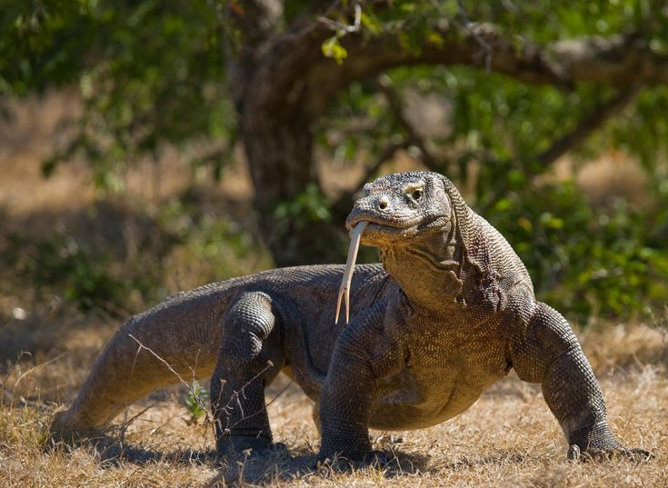
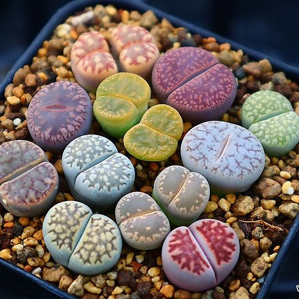
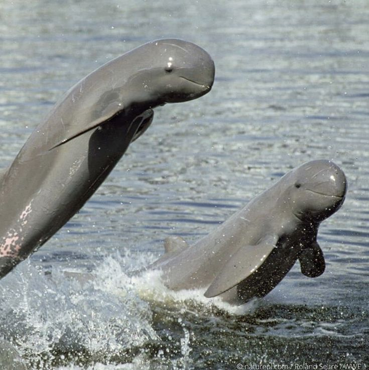

Cerita Interaktif
Belajar tentang flora dan fauna Indonesia melalui cerita menarik yang dikemas dengan ilustrasi dan animasi memukau
Platform edukasi alam yang menggabungkan teknologi dan storytelling untuk pengalaman belajar yang tak terlupakan
Belajar tentang flora dan fauna Indonesia melalui cerita menarik yang dikemas dengan ilustrasi dan animasi memukau
Jelajahi hutan hujan tropis, gunung berapi, dan ekosistem laut dalam pengalaman virtual 360 derajat
Temukan ribuan fakta unik tentang keanekaragaman hayati Indonesia yang jarang diketahui
Koleksi foto dan video berkualitas tinggi dari berbagai ekosistem alam Indonesia
Bergabung dengan ribuan pengguna lain yang peduli dengan pelestarian alam Indonesia
Raih badge dan pencapaian sambil belajar tentang alam melalui kuis dan tantangan seru
Ayo cari tahu lebih banyak!

Spesies kadal terbesar di dunia yang bisa mencapai 3 meter, terletak di NTT.

Di Kepulauan Derawan, Kalimantan Timur ada danau berisi ribuan ubur-ubur jinak yang kehilangan sengatnya.

Goa dengan stalaktit & stalagmit berkilau indah

Tanaman sukulen mirip batu.

Keindahan api biru yang hanya ada di Indonesia, terletak di Banyuwangi, Jawa Timur.

Kenali spesies unik yang hanya ada di Indonesia lebih tepatnya di Kalimantan Timur. Lumba-lumba Air Tawar di Sungai Mahakam.
Cerita Alam
Pengguna Aktif
Destinasi Virtual
Fakta Menarik
Bergabunglah dengan ribuan pengguna yang telah menemukan cara baru untuk mengenal dan mencintai alam Indonesia